System Integration Lab#
The objective of this lab is to use a combination of modules covered in previous labs. This lab will thus use the GPIO, EPWM, ADC, CMPSS, and (optionally) the DAC modules. In doing so, this lab showcases how the peripherals handle most of the functionality in C2000 devices, reducing the load on the CPU. The reader should leave this lab exercise with a better understanding of how to interface a variety of peripherals in order to perform a certain task
Solution#
The Academy lab modules provide step-by-step instructions for users to follow along and carry out; however, the completed software solutions are also available in the device’s SDK.
See your device’s specific SDK to obtain this lab’s software solution.
You can download your device’s SDK by going to the device’s product page on TI’s website and navigating to the ‘Design & Development’ and ‘Software Development’ tabs.
This specific lab’s solution can be found in: [Device_SDK_Install_Path]/examples/driverlib/single_core/system_integration.
Overview#
In this lab exercise, the EPWM module is configured to output a signal with a duty cycle that will vary based on an ADC conversion result. We can then used an external voltage source or (optionally) the DAC to simulate an external signal that the MCU will monitor. The ADC will then sample this signal to capture its value. Using that ADC sample value, we can then modify our EPWM in response by calculating a new duty cycle for the EPWM signal after each ADC conversion. At the same time, a comparator (CMPSS) will be used to monitor the external/DAC output. If the external/DAC signal is above a certain threshold value (simulating some system error or dangerous event), the comparator will react. This event can be used to trigger a one-shot trip to drive the EPWM output to a known safe state (in this case, a low state).
Please note that if you choose not to use the DAC to generate a signal, you will need to alternatively provide an external voltage source as the input to your ADC.

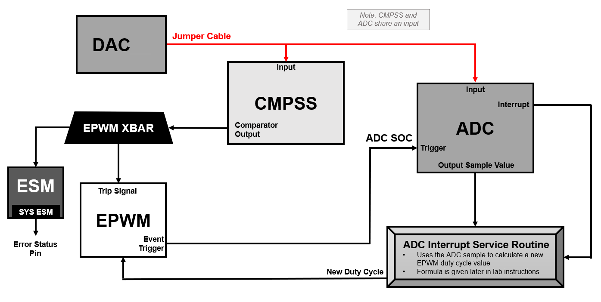
Lab Setup#
Hardware Setup#
Required hardware for this lab:
ControlSOM with the supplied USB cable.
External voltage supply (only needed if not using the DAC)
Oscilloscope (optional).
This lab exercise is intended for the F29H85x ControlSOM. Before continuing this lab, please be sure to reference the ControlSOM User Guide for hardware setup details.
Using the supplied USB cable, connect the USB Type-C connector into your C2000 board and the USB Standard Type-A connector into your computer’s USB port.
Please note that a docking station is recommended to successfully run this lab. If you are using the controlSOM docking station, an additional power supply is needed for the docking station. See the ControlSOM User Guide for more details.
Check the power status LEDs (LED1 and LED2) to confirm that the board is powered and provides a JTAG communication link between the device and CCS.
Software Setup#
Required software for this lab:
The device’s SDK
Your device’s software development kit (SDK) download can be found on the “Software Development” section of your device’s product page on TI’s website.
The Code Composer Studio (CCS) platform.
See the CCS User’s Guide for more information about this IDE.s
Start a CCS Project#
Our first task is to import an empty project to our CCS workspace.
Open CCS and go to File → Import Project(s). A new window should appear.
Click the Browse button and select the
[MCU_SDK_[DEVICE]_Install_Path]/examples/driverlib/single_core/empty_projectsand click “Select Folder”.Note that the default Windows installation directory
[MCU_SDK_[DEVICE]_Install_Dir]isC:/ti/c2000/MCU_SDK_[DEVICE]_X_XX_XX_XX_XX.
Under Discovered Projects, you should now see the
empty_driverlib_project.

Click Finish to import and copy the
empty_driverlib_projectinto your CCS workspace.After the project has been imported, the project explorer window should look like below:

Rename the project:
Right-click on the project in the “Project Explorer” panel. Select Rename from the drop-down menu and rename the project to ‘system_integration_lab’ or a name of your choosing.
Now click the Down Arrow located to the left of the imported project to expand it and select
empty_driverlib_project.c. Right-click on the file, and select Rename to rename the file to ‘system_integration_lab.c’ or a name of your choosing.
Configure the GPIO#
We will now use SysConfig to set up any necessary GPIO signals. For this lab, we will configure one GPIO connected to one of the board LEDs so that we can use this as a visual indicator. The LED will be used to observe the EPWM duty cycle change.
In the project directory, open the
.syscfgfile by double-clicking on it.Navigate to the
Softwaretab in this SysConfig (it should open by default).In the ‘SYSTEM’ group, click + next to ‘GPIO’ to add a GPIO instance.
Change the GPIO settings as shown and described below.
Rename the GPIO to “myBoardLED0_GPIO”.
Change the ‘GPIO Direction’ to an “output”.
Click on the ‘Pinmux’ drop-down to expand it, and select the board’s LED GPIO (in this case, GPIO23).
To check or confirm which GPIO is connected to your board’s LED, reference your board’s schematics.

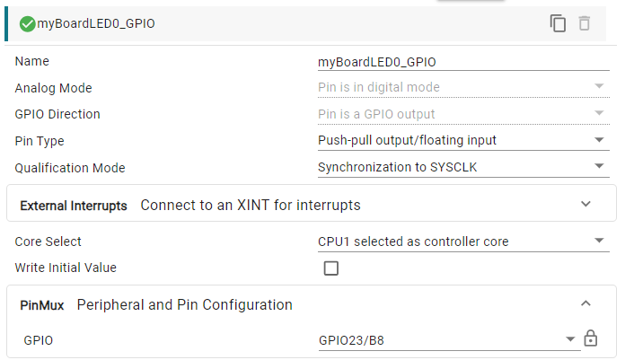
Configure the ADC#
Next, we will configure our ADC module. The ADC will be used to (1) sample a waveform and (2) trigger an interrupt that will carry out calculations to be able to modify our EPWM waveform in response to the sample values.
In your SysConfig file, click + next to ‘ADC’ to add an ADC instance.
Rename the ADC to “myADCA”.
Change the ‘Clock Prescaler’ to be “4.0” (when implemented, this results in clock/4).
After expanding the view for the ‘SOC Configurations’ (SOC being “Start Of Conversion”). We will now configure the settings to control the start of our ADC sampling conversions.
Enable “SOC/EOC number 0” and expand the ‘SOC0’ drop-down that appears.
Change ‘SOC0 Channel’ to “single-ended, ADCIN4” since we will be using ADC input 4 as our ADC input channel and SOC0 as the start of conversion.
Under “SOC Triggers”, change the ‘SOC0 Trigger’ to be “EPWM1, ADCSOCA”. In this way, the ADC will look to EPWM1 as the trigger for its SOC. When we configure EPWM1 settings later, we will complete the ADCSOC setup from the EPWM1 perspective.
A sample window of 15 clock counts will be used for this example.

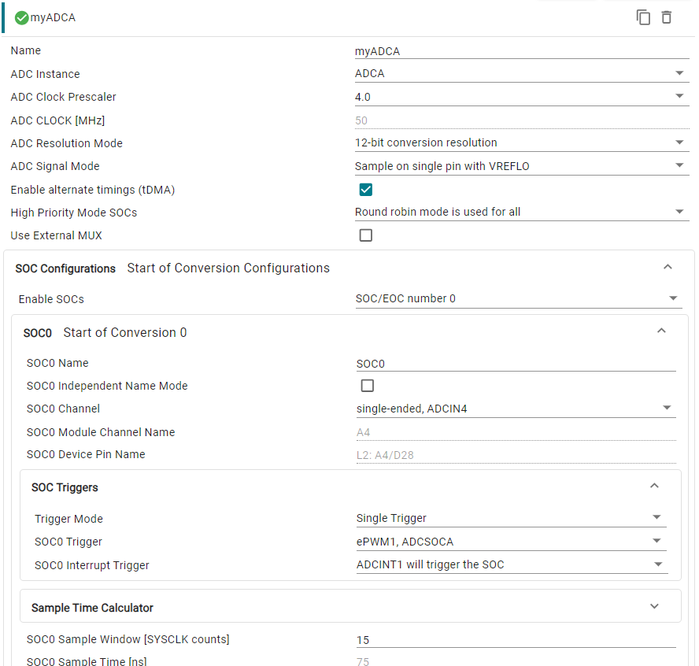
The subsequent step for the ADC is setting up interrupt configuration. We want to trigger an interrupt at the end of each conversion so that we can update EPWM parameters within the interrupt service routine (ISR).
Expand the “ADC INT Configurations” drop-down and set the ‘ADC Interrupt Pulse Mode’ so that the interrupt will occur at the end of the conversion.
Enable the ‘ADCINT1 Interrupt’ and expand the “INT1” drop-down that appears.
Check the box to enable ADC Interrupt 1 and check that the SOC source is SOC/EOC0.
Since we are enabling an interrupt, we need to register the interrupt with the peripheral interrupt and priority expansion block (PIPE).
Expand the “Register PIPE Interrupt Handlers” drop-down.
For ‘Register Interrupts’, select “Interrupt 1” and then expand the “ADCA Interrupt 1” drop-down that appears.
We can use the default names that appear here for ADCA. Note the name of the interrupt handler as this will be used later in our C code.

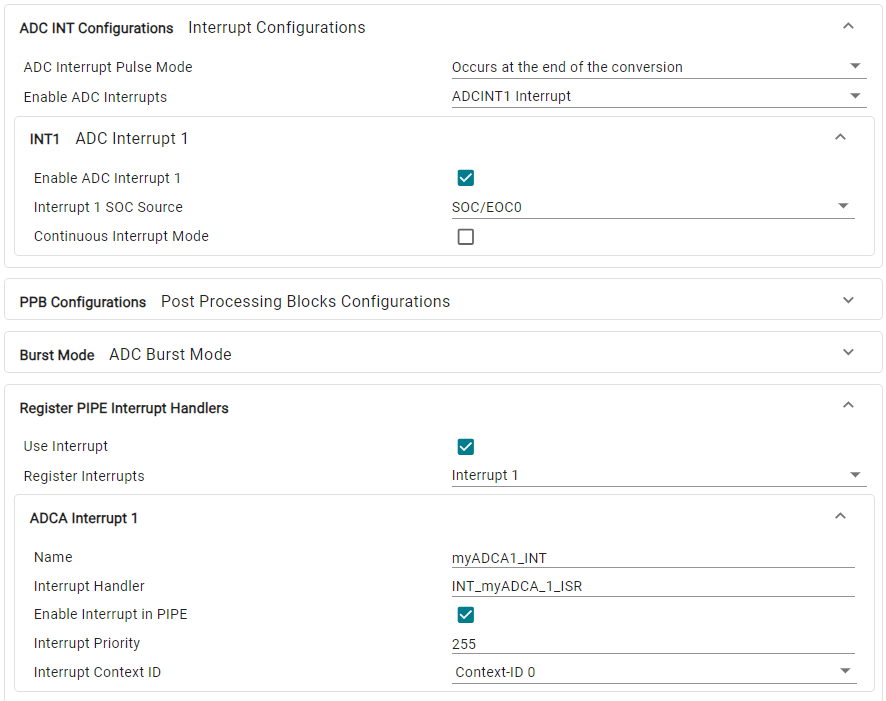
The final step is to set up the selected pins for our ADC.
Expand the “Analog PinMux” drop-down and change the ‘Use-Case’ to be “CUSTOM” so that we can manually select which analog pins we are using.
For ‘Pins Used’, add your ADC input channel. Since we are using ADC input channel 4, you should select the option with ‘A4’.
While we have the Analog PinMux open, you can also go ahead and add the pin we will use for our DAC in the next steps. To do so, add ‘DACA_OUT’ to the ‘Pins Used’ since we will be using DACA to output our signal.

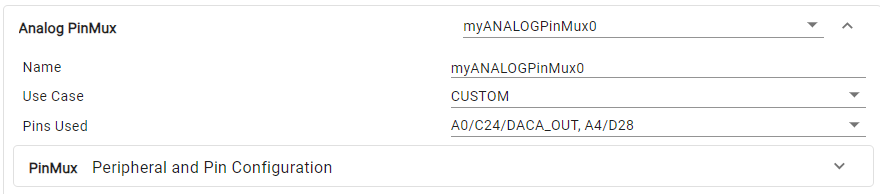
Configure the DAC#
If you are using an external voltage source rather than the DAC, skip this section.
The next module we need to set up is the DAC module. For this example, we will set up the DACA module to generate our output to be routed to the ADC for sampling. To generate a meaningful DAC waveform, we need to select a voltage for the DAC to use as a reference. This example will use the ADC VREFHI as the reference voltage.
In your SysConfig file, click + next to ‘DAC’ to add a DAC instance.
Rename the DAC to “myDACA”.
Select the ‘Reference Voltage’ to be
ADC VREFHI reference voltageand adjust the ‘Gain Mode’ so it is “Gain set to 2”. Recall that gain is the ratio of output to input, so we are adjusting the final voltage output of the DAC.Finally, check the box to enable the output and confirm that the ‘DACA_OUT’ signal is selected in the “Analog PinMux”.

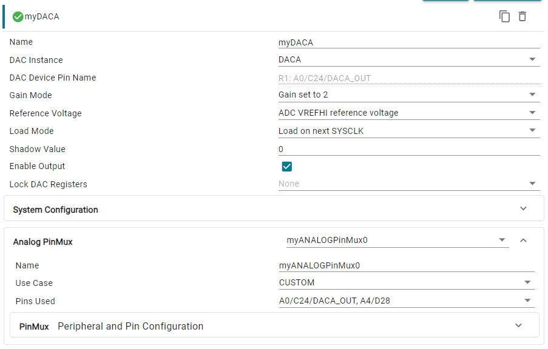
Configure the CMPSS#
The comparator generates a high digital output when the voltage on the positive input is greater than the voltage on the negative input, and a low digital output when the voltage on the positive input is less than the voltage on the negative input.
In this example, the Comparator Subsystem (CMPSS) can be used to send a trip signal to the EPWM module based on its monitor the values acquired by the ADC sampling. When the ADC conversion value is above a specific threshold value, we can configure the CMPSS to react by changing its output. This output will be used in the next section to affect the EPWM module’s behavior.
In your SysConfig file, click + next to ‘CMPSS’ to add a CMPSS instance.
Rename the CMPSS to “myCMPSS” and check the box to enable the module.
With the CMPSS module enabled, all that’s left is to define the threshold value that the comparator will use to compare. Under “DAC Configurations”, expand the ‘High Dac Configuration’ drop-down. Set the high comparator DAC value to be
2500. When the comparator detects a value beyond this, it will change its output in response.

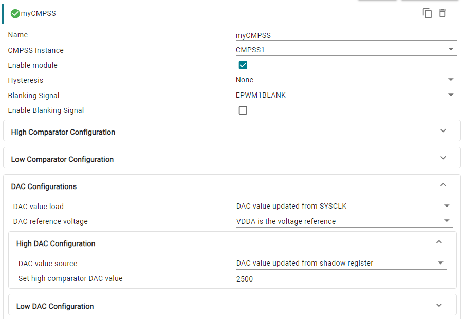
Configure the EPWM#
EPWM X-BAR Configuration#
With the CMPSS set up, we now need to connect its output signal from the CMPSS module to the EPWM module. The EPWM X-BAR module provides a way for peripheral signals to interface with the EPWM. In this way, we can use the EPWM X-BAR to connect the CMPSS to the EPWM (CMPSS will be the EPWM X-BAR input, and the output will be directed to the EPWM module.)
In your SysConfig file, click + next to ‘EPWM XBAR’ to add an EPWM X-BAR instance.
Rename the EPWM XBAR to “myEPWMXBAR4” and select the ‘Trip Input’ to be ‘TRIP4 of the EPWM X-BAR’. TRIP4 is one of several generic “TRIP” signals that can be used within the EPWM module. With these settings, we are assigning this EPWM X-BAR’s output signal to be known as “TRIP4” to our EPWM module.
For the ‘Input Source Signals’, select “CMPSS1 CTRIPH”. This means that (1) the input to the EPWM X-BAR will be from the selected CMPSS module and (2) the specific behavior (“H” for “high”) that produces a trip event. In other words, when the comparator output goes high, an EPWM trip can be produced.

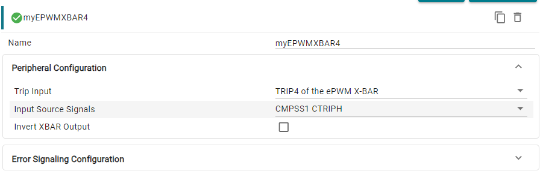
ESM Configuration#
The CMPSS is often set up with these configurations and interfaces in order to detect when a fault occurs (for example, a short circuit). In real applications, developers may want their system to have a specific pre-programmed response to the fault occurrence (beyond tripping the EPWM in hardware).
The Error Signaling Module (ESM) is a subsystem built to handle responses to error events that occur throughout the device. Specifically, the ESM can trigger interrupts and manipulate values of error pins in order to help execute a response or signal to an external device that an error has occurred.
Within the EPWM XBAR module in SysConfig, expand the “Error Signaling Configuration” drop-down and check the box to “Configure Error Signaling”.
Expand the “Error Signaling” drop-down and check the box to “Configure event in the system ESM”.
Expand the next “System ESM” drop-down and check the box to “Enable Influence on Error pin”. This will allow the ESM to manipulate the error status pin in response to the comparator output.

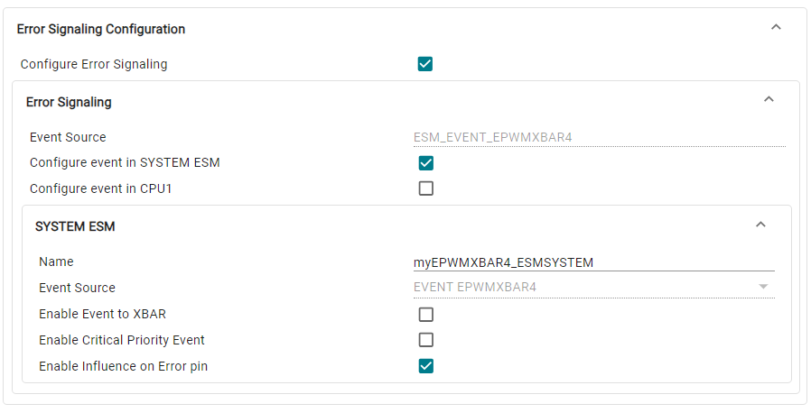
EPWM Configuration#
Once the EPWM X-BAR is setup, we can configure the EPWM module. In this lab, recall that our EPWM module plays more than one role:
Triggers ADC SOCs
Generates PWM waveform where:
The duty cycle changes in response to ADC conversion results.
The active EPWM channel output gets tripped to a low state in response to the comparator detecting values higher than the set threshold.
In your SysConfig file, click + next to ‘EPWM’ to add an EPWM instance.
Rename your EPWM to “myEPWM1” since we will be using the EPWM1 module. Note that while there are two outputs per EPWM module (channel A and channel B), for this lab, we only need to generate a signal output on the EPWM1A channel. EPWM1B is not needed for the lab and will not be configured.
EPWM Parameters#
For this lab, we will initalize the EPWM module so that it produces a 50kHz EPWM with a 50% duty cycle. We will choose up-down-count mode in order to produce a symmetric waveform, meaning the relevant equation is:
\(\text{Time Base Period}=\frac{EPWM Clock}{2*PWM Frequency}=\frac{100* 10^6}{2* 50000}=1000.\)
Note that for just up-count mode or down-count mode, the calculation would be:
\(\text{Time Base Period}=\frac{EPWM Clock}{PWM Frequency}-1.\)
To implement this, start with the EPWM time-base submodule:
Expand the “EPWM Time-Base” drop-down.
Change the ‘High Speed Clock Divider’ to “Divide clock by 1” and set the EPWM ‘Time Base Period’ to “1000”.
Set the ‘Counter Mode’ to “Up-Down-Count Mode”.
Expand the “EPWM Counter Compare” drop-down as well as the “CMPA” drop-down.
Set the CMPA value to be “500”. For a 50% duty cycle, we need to place the EPWM edge at half the value of the EPWM time base period. We can set up a counter-match event (counter = CMPA) to perform actions on the PWM output (rising or falling edge).

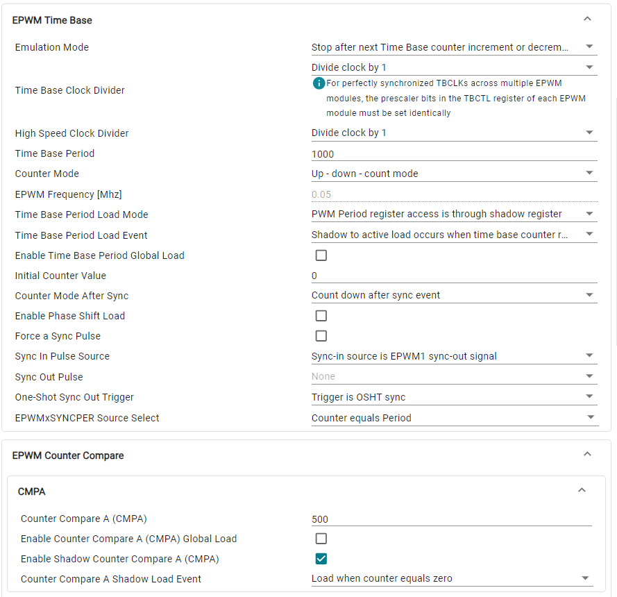
Next, we will use the EPWM action qualifier submodule to define what happens on a counter-match event. In this lab, we will change the output of the EPWM to go high upon a CMPA-up-count match and low for a CMPA-down-count match.
Note that with these actions, if CMPA increases, duty cycle (or “ON” time) will descrease.
duty cycle percentage = (“ON” time) / (total time)

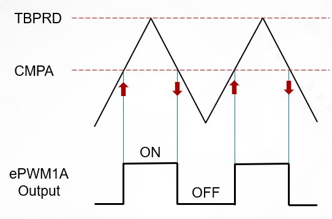
Expand the “EPWM Action Qualifier”, “EPWMxA Output Configuration”, and “EPWMxA Event Output Configuration” drop-downs.
For “EPWMxA Time base counter up equals COMPA”, select “Set output pins to high”.
For “EPWMxA Time base counter down equals COMPA”, select “Set output pins to low”.

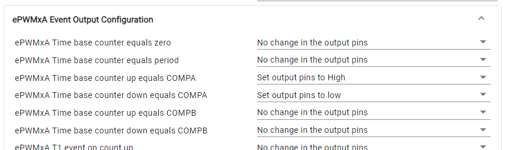
EPWM Trip#
Now that we have established the foundation of our EPWM module, we can integrate the settings that allow for the EPWM to be tripped as well as to generate the ADC SOC.
The EPWM trip zone submodule will be utilized to set up the trip. We want our output to go low whenever the trip signal occurs.
Expand the “EPWM Trip Zone” drop-down.
Note that whenever a trip is detected (from any trip source), the actions configured as the “TZA Event” and “TZB Event” will be carried out on EPWMxA and EPWMxB respectively.
Since we are only using EPWM1A, we can set “TZA Event” to a ‘Low voltage state’.
For “One-Shot Source” add “One-Shot DCAEVT1”.

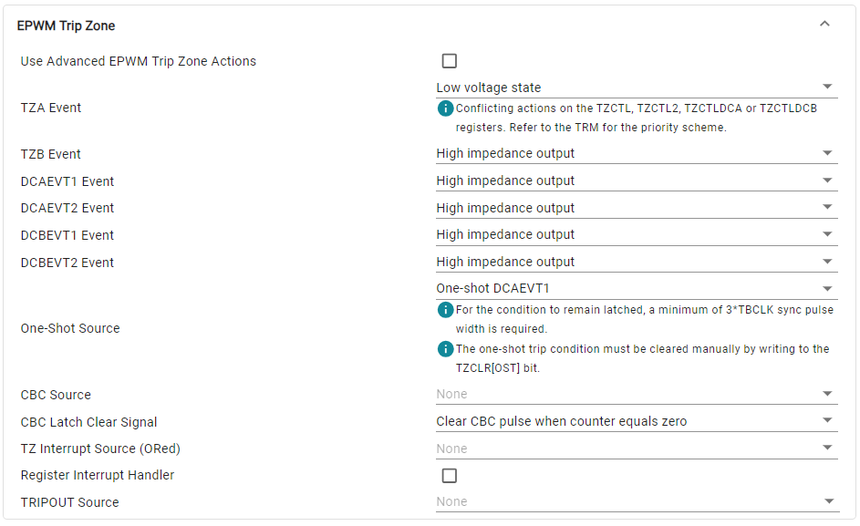
On the EPWM side, we will leverage the EPWM digital compare submodule to use activity on the TRIP4 signal (the CMPSS output) as a one-shot trip source. The TRIP4 event will be mapped in to the EPWM “digital compare A event 1” (or “DCAEVT1”). We can then select what type of activity on the DCAEVT1 signal triggers a trip (trip when DCAEVT1 goes high or trip when DCAEVT1 goes low).
Expand the “EPWM Digital Compare” and “DCAEVT1 and DCAEVT2” drop-downs.
Select “Trip 4” (TRIP4) as the signal for ‘Digital Compare A High’ (DCAxH).
Set the “Condition for Digital Compare output 1A” to produce an “Event when DCxH is high”.

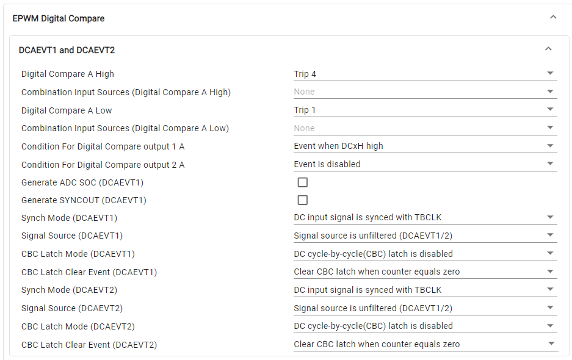
EPWM ADC SOC#
The final step is to configure the EPWM to trigger ACD start of conversions (SOC). This is accomplished in the EPWM event trigger submodule.
Expand the “EPWM Event Trigger” and “ADC SOC Trigger” drop-downs.
Check the box to enable the ADC SOC A trigger.
Set ‘SOCA Trigger Source’ to be “Time-base counter equal to CMPA when timer is incrementing”. Every occurrence of this counter match event will trigger an ADCSOCA.

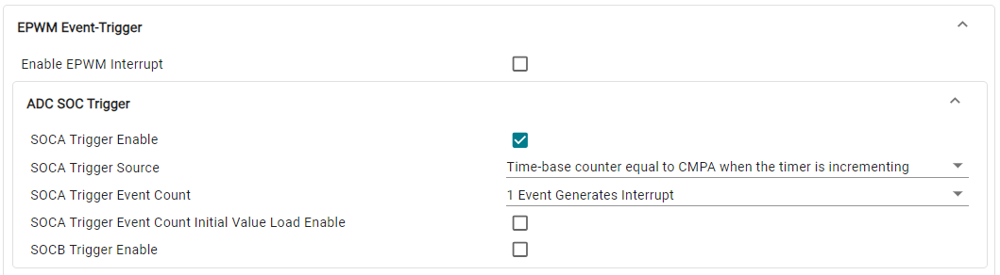
This concludes the SysConfig portion of the lab.
Program Setup#
In your project, double-click on the .c file to open it. Follow the below instructions to develop your program.
Define Global Macros and Variables#
The first part of this lab’s program setup consists of defining all of the functions and variables to be used throughout the program. There are four main things that need to be initialized/declared:
Included header files - files that are referenced in the program and contain functions declarations that can be used.
Defines - values that will not be changing throughout the program (such as the EPWM period).
Global variables - variables that will be utilized throughout the program (such as the ADC result or CMPA value).
Function prototypes - declarations of each function used/created (such as the module initialization functions as well as the ADC ISR function).
Copy the below code into your .c file above the default main().
//
// Included Files
//
#include "board.h"
#include "esm.h"
#include "inc/hw_memmap.h"
//
// Defines
//
#define EPWM_PERIOD 1000
#define ADC_SCALE 1/4096.0
#define comp_threshold 2500
#define pinCfg GPIO_79_ERRORSTS
#ifdef DACA_BASE
#define USE_DAC //Comment line if not using DAC
#endif
//
// Globals
//
uint16_t adcAResult; /// value used to store ADC conversion
uint16_t CMPA_result; /// value used to calculate CMPA for new duty cycle value
uint16_t dacVal = 1000; /// value used to set the DAC output
uint16_t ledBlinkRate = 50; /// initialized value for LED blink rate
uint16_t LED_count = 0; /// LED counter
uint16_t interruptCount=0;
float duty; /// value that holds part of the calculation for CMPA
uint16_t errorStsPin = 79; /// using gpio79 for ERRORSTS pin functionality
//
// Function Prototypes
//
__attribute__((interrupt("INT"))) void INT_myADCA_1_ISR(void);
Define main()#
We will now move on to setting up our main() function. To begin, we must set up the device. Use the following code to initialize the
clocks, peripherals, and PIE vectors. Within main() add the following lines of code:
//
// Initialize device clock, peripheral clocks and interrupts
//
Device_init();
SysCtl_disablePeripheral(SYSCTL_PERIPH_CLK_TBCLKSYNC);
//
// Board Initialization
//
Board_init();
//
// GPIO qualification - ASYNC
//
GPIO_setQualificationMode(errorStsPin, GPIO_QUAL_ASYNC);
//
// GPIO pad configuration - STD
//
GPIO_setPadConfig(errorStsPin, GPIO_PIN_TYPE_STD);
//
// Pin configuration
//
GPIO_setPinConfig(pinCfg);
//
// Enable PIPE Global Interrupt (for INTs and RTINTs) and INT enable in CPU.
//
ENINT;
Interrupt_enableGlobal();
//
// Start ePWM1, enabling SOCA
//
EPWM_enableADCTrigger(myEPWM1_BASE, EPWM_SOC_A);
//
// Enable sync and clock to PWM after PWM initialization is complete
//
SysCtl_enablePeripheral(SYSCTL_PERIPH_CLK_TBCLKSYNC);
Following the general device and peripheral setup from above, we need to write the functional portion of the main(). This includes writing a value to the buffered DAC as well as
monitoring the one-shot trip flag. The flag and ESM error are cleared whenever the trip
condition is no longer present. Copy the below code into your main() following the device setup from above.
//
// Loop indefinitely
//
while(1)
{
#ifdef USE_DAC
//
// Set the value for the DAC
//
DAC_setShadowValue(myDACA_BASE, dacVal);
#endif
//
// Trip flag is set when CTRIP signal is asserted
//
if((EPWM_getTripZoneFlagStatus(myEPWM1_BASE) & EPWM_TZ_FLAG_OST) != 0U)
{
//
// Wait for comparator CTRIP to de-assert
//
while((CMPSS_getStatus(myCMPSS_BASE) & CMPSS_STS_HI_FILTOUT) != 0U)
{
#ifdef USE_DAC
//Update DAC value in case updated during this time
DAC_setShadowValue(myDACA_BASE, dacVal);
#endif
}
//
// Clear trip flags
//
EPWM_clearTripZoneFlag(myEPWM1_BASE, EPWM_TZ_INTERRUPT | EPWM_TZ_FLAG_OST | EPWM_TZ_FLAG_DCAEVT1);
//
// ESM clear raw status for SYSTEM ESM base and clear ERROR pin
//
ESM_clearRawInterruptStatus(ESMSYSTEM_BASE,ESM_EVENT_EPWMXBAR4);
ESM_clearErrorPin();
}
}
Set Up the ADC ISR#
The final step is to define the contents of the ADC ISR. This is where all of the calculations will be made for the control loop.
The first step is to read the conversion results of the ADC. Add the following code to your .c file below your main().
//
// ADC ISR
//
__attribute__((interrupt("INT"))) void INT_myADCA_1_ISR(void)
{
interruptCount = interruptCount+1;
//
// Get the latest ADC conversion result
//
adcAResult= ADC_readResult(myADCA_RESULT_BASE, myADCA_SOC0);
Next, in the ADC ISR we need to utilize the ADC result to calculate the new value for the counter compare value (CMPA) and implement it to change the EPWM duty cycle. The formula that will be used is, CMPA = (Time base period) * (1 - (ADC Conversion Result/4095)). Add the code below to your ADC ISR to implement this.
//
// Update the CMPA value according to the ADC result
//
duty = adcAResult*ADC_SCALE;
CMPA_result = EPWM_PERIOD*(1-duty);
//
// Update the CMPA value with the new calculated value
//
EPWM_setCounterCompareValue(myEPWM1_BASE, EPWM_COUNTER_COMPARE_A, CMPA_result);
The next portion of the ADC ISR uses our LED GPIO. Here, the LED is set up to blink at a specific rate based on the calculated duty cycle. The formula for ‘ledBlinkRate’ is (100-(duty)(100))100.
Note that ‘ledBlinkRate’ is actually a counter of how many interrupts are needed before the LED GPIO is toggled. The duty cycle is then calculated and multiplied by 100 to adjust the numbers and make sure we can see the LED blink. As the duty cycle increases, the rate of the LED GPIO increases. Add the code below to your ADC ISR.
//
// Calculate the LED blink rate
//
ledBlinkRate = (100-(duty*100))*100;
//
// Toggle the LED based upon the duty cycle chosen
//
if(LED_count++ > ledBlinkRate) // Toggle LED to change state
{
GPIO_togglePin(myBoardLED0_GPIO); // Toggle the pin
LED_count = 0; // Reset the counter
}
Lastly, in the ADC ISR we need to clear the interrupt flags so that we can allow for future interrupts and check for an ADC overflow condition. Add the code below to complete your ADC ISR.
// Clear the interrupt flag
//
ADC_clearInterruptStatus(myADCA_BASE, ADC_INT_NUMBER1);
//
// Check if overflow has occurred
//
if(true == ADC_getInterruptOverflowStatus(myADCA_BASE, ADC_INT_NUMBER1))
{
ADC_clearInterruptOverflowStatus(myADCA_BASE, ADC_INT_NUMBER1);
ADC_clearInterruptStatus(myADCA_BASE, ADC_INT_NUMBER1);
}
}
Build the Project#
With the configurations and code complete, we can ‘Build’ the project to check for any errors. Once the project builds without errors, we will connect to the device, load the program to the device, and run it within a debug session.
Right-click on your project and hover over the Build Configurations button until another panel pops up. Select the CPU1_RAM build configuration.
With the RAM configuration selected, the project will be loaded to the RAM memory of the device.
Right-click on your project again and select Build Project(s) to build your program. Fix any compilation errors.
Implement any necessary hardware connections if using an external voltage source. If the DAC is being implemented, it will supply the DAC output waveform to the ADC as a signal input. If you have an oscilloscope, you can also connect a probe to your EPWM1A pin to view the waveform on the scope.
See your board’s schematics to verify signal pin locations.
Device |
ADCINA4 Pin |
EPWM1A Pin |
|---|---|---|
F29H85x |
119 |
15 |
Run the Project#
Now we will start a debug session.
Ensure that the USB cable from your board is connected to your computer.
Right-click on your project and select Debug Project.
If prompted, check that only CPU1 is selected to load the program to.
This action should re-build your project, connect to the debugger, and load the program to the device.
The DEBUG window should populate and the debugger should have paused at the beginning of your
main().
Now we will continue the debug session and the
main()by clicking the blue Continue button in the upper left corner.Note that there are several other buttons that can be used to help debug your project by stepping through your program line by line. Feel free to explore them here, or see the CCS User’s Guide for more details on its capabilities.
When you open the debug perspective, also add
adcAResult,CMPA_result,EPwm1Regs.TZFLG.OST,duty, anddacValto the expression window.

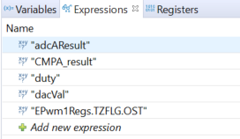
Validate the Project#
With the project now running freely, we can now check to see if the project is running as expected. To check this example, we have two ways to alter the ADC input value:
Use the DAC and change the DAC output to see the system response.
(Alternatively) Use an external voltage source supplied to the ADC input channel see the system response.
In either case, we can vary the ADC input voltage and then verify the example is running properly by doing the following:
Observing the LED blinking according to the EPWM duty cycle.
Using an oscilloscope to view the EPWM waveform and see it alter accordingly.
Using External Voltage#
As an example, we can first use an external voltage source as the ADC channel input. When 1.5V is applied to the ADC pin, the expression window should look like the below:
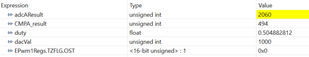
In this example the adcAResult is 2060, which corresponds to a voltage reading of ~1.5V
ADC input voltage = (ADC reading/4096)VREFHI
ADC input voltage = (2060/4096)3V = 1.508 V
If using an oscilloscope to view the EPWM output, you’ll notice the output is a 50kHz output (if EPWM clock is 100MHz) with a ~50% duty cycle (voltage range 0-3.3V in the figure below)
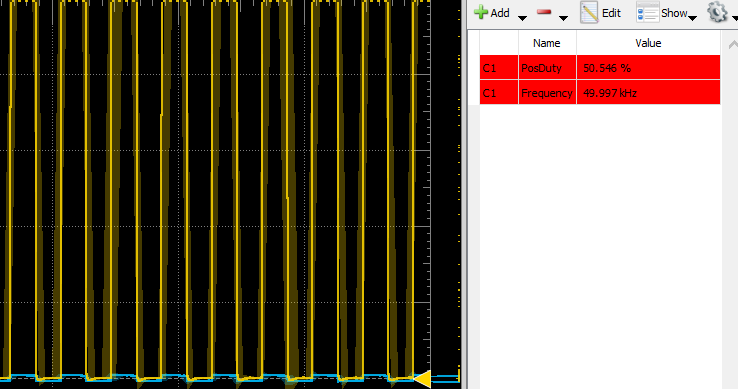
The new CMPA value is based on the following formula:
CMPA = TBPRD(1-Conversion/4096)
CMPA_result = 1000(1-(2060/4096))= 497
There will be slight fluctuations in these readings as the ADC is sampling and re-calculating the CMPA result.
Using the DAC#
Rather than use an external voltage source, we can simply use the DAC module to provide a signal. You’ll notice the current value we set in the DAC module is 1000, so the ADC should be reading close to this value when the jumper is connected between the DAC output pin and the ADC input pin.

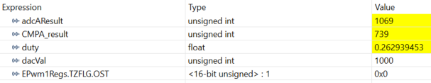
We can change this value in the “Expressions Window” by clicking on it and changing the value. If we set it to something above the comp_threshold value then the ePWM outputs will trip low and the one-shot trip flag will be set to 1.

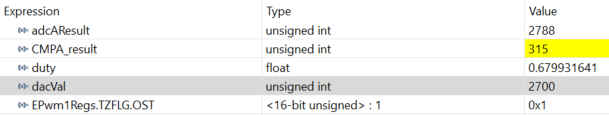
Having verified, we can terminate the active debug session using the Terminate button to close the debugger. This concludes the entirety of this lab as executed in the RAM of the device. We can alternatively load the program to FLASH memory to remain on the device.
Build and Run in FLASH#
Hence, the final step for this lab is to practice executing the program in Flash. To do this we will utilize the FLASH build configuration that is built into the project.
Right click on the project -> Select “Build Configurations” -> “Set Active” -> select the FLASH configuration file. Detailed information for what this configuration is changing is outlined in the following FLASH FAQ
Click the “Debug” icon. The FLASH will automatically be erased and reprogrammed with the project’s content.
When programming the FLASH, if the DAC is being used as the source for the ADC then you will not be able to change the value of ‘dacVal’. If you are supplying an external voltage to the ADC input pin, then you should still see the change in EPWM duty and LED blink rate as the input voltage is changed.
Example of the DAC version while running the program from Flash (0-3.3V range):
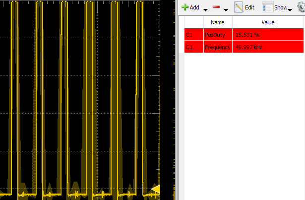
If you disconnect your device from the power source and reconnect you should see the program still executing since the program is located in FLASH.
Terminate the Debug Session and Close the Project#
With the project developed and validated, we can close this debug session.
Click the red Stop button at the top of your
DEBUGwindow to terminate the active debug session and disconnect the debuggerYou can return to the
Project Explorerwindow by clicking on the corresponding button at the top of the panel on the left.
This concludes the lab exercise.
Full Solution#
Recall that the completed software solution is available as well. Please refer to the top of this page to review the location of this lab’s software solution.